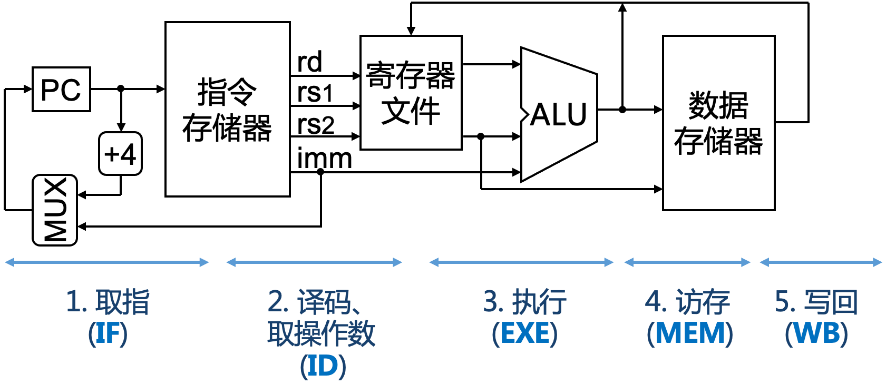
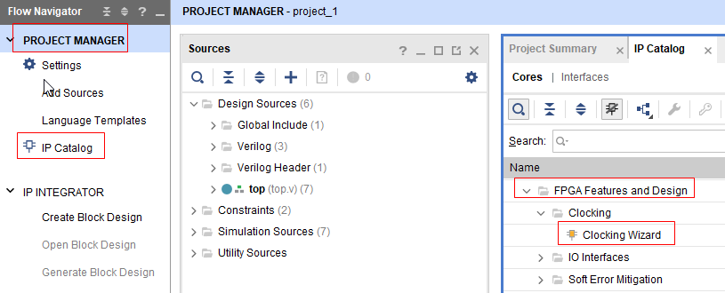
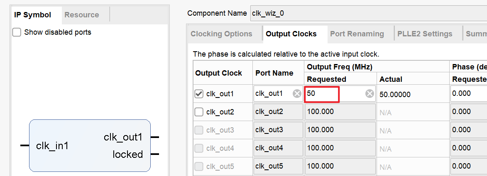
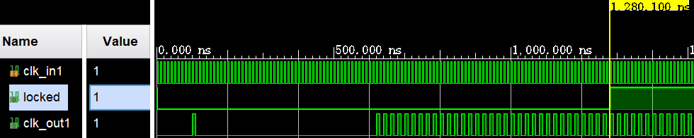
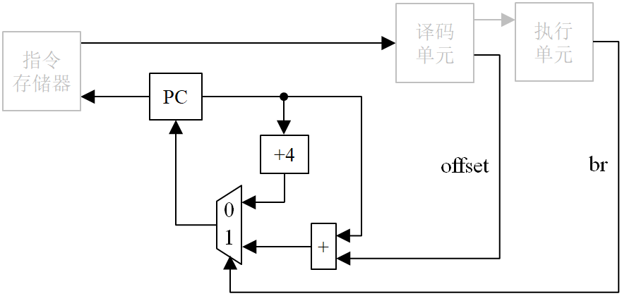
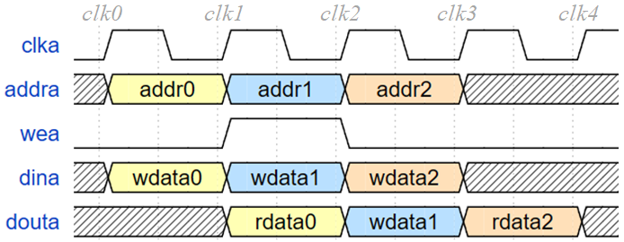
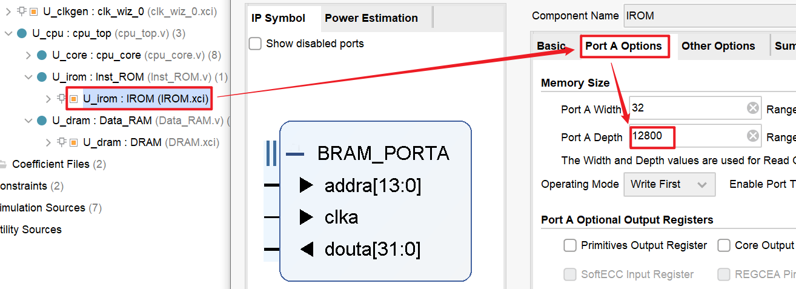
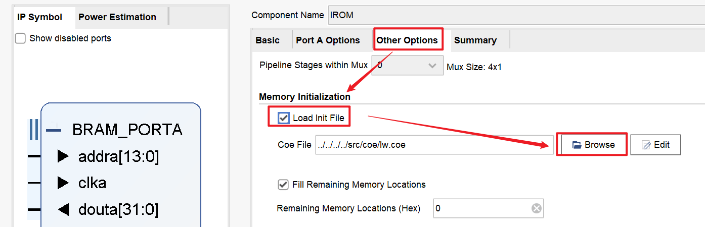
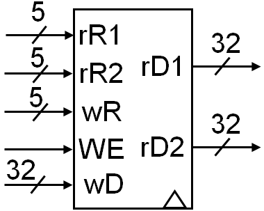

功能部件设计
数据通路是用于描述CPU内部信息流的模型，刻画的是指令执行过程中的主要信息的基本流动路径。在图论中，一条路径通常包含若干个顶点和若干条边。因此，数据通路的设计也包含功能部件 (路径的“顶点”) 和部件互连 (路径的“边”) 两个方面。
数据通路的主要功能部件包括时钟模块、程序计数器 (Program Counter, PC)、指令存储器 (Instruction ROM, IROM)、数据存储器 (Data RAM, DRAM)、寄存器文件 (Register File, RF)和算术逻辑运算单元 (Arithmetic and Logic Unit, ALU)，如图3-1所示。

数据通路具体包含哪些功能部件取决于设计者，就像同一个数字逻辑实验可以有很多种模块划分方案。下面以表3-1所示的模块划分方案为例来说明数据通路的基本功能部件。
| 功能部件 | 功能 |
|---|---|
| 时钟模块 | 使用IP核对板上晶振时钟进行分频 |
| PC（Program Counter） | 程序指针寄存器，存储当前指令的地址 |
| NPC（Next PC） | 计算得出下一条指令的实际PC值 |
| Inst_ROM（Instruction ROM） | 指令存储器，存储指令机器码，对CPU只读 |
| RF（Register File） | 寄存器堆，存储指令的源操作数、计算结果 |
| SEXT（Signed-Extender） | 立即数扩展器，将指令码中的立即数扩展成32位源操作数 |
| ALU（Arithmetic and Logic Unit） | 完成算术运算、逻辑运算 |
| Data_RAM（Data RAM） | 数据存储器，存储主存数据，对CPU可读可写 |
| MREQ（Memory REQuest） | 通过CPU模块的访存接口向外发出读写主存的访问请求 |
| MEXT（Memory data EXTender） | 访存数据扩展器，用于对从内存读回的半字、字节数据进行扩展 |
1. 时钟模块
CPU需要通过系统时钟信号来控制指令执行的时序。一般地，CPU的执行速率与时钟频率成正比，即时钟频率越高，CPU的执行速度越快。然而，CPU内部的部件存在一定的物理延迟，如果时钟频率过高，这些部件来不及响应，就会产生不稳定的输出结果，从而导致指令执行结果出错。
本课程的FPGA开发板具有100MHz频率的晶振时钟源。通常单周期CPU难以在如此高的频率下运行。因此，我们需要借助Vivado的PLL时钟IP核来实现晶振时钟的分频。
1.1 时钟IP核
demo工程已经创建好了时钟IP核，同学们无需重复创建。
时钟IP核的创建方式
在Vivado中，依次点击IP Catalog->FPGA Features and Design->Clocking，并双击Clocking Wizard即可创建时钟IP核，如图3-2所示。其他IP核均可通过同样的方式创建，下文不再赘述。

Clocking Wizard IP核 时钟IP核默认输出50MHz的时钟来驱动CPU运行。如果需要调节频率，可双击IP核打开配置窗口，点击切换到“Output Clocks”标签页，改变clk_out1的输出频率，如图3-3所示。

修改IP核设置后，点击OK按钮。在随后弹出的对话框中，点击“Generate”按钮即可。
1.2 时钟模块的使用
demo工程的顶层模块miniRV_SoC已实例化并连接好时钟IP核，相应代码如下。
| miniRV_SoC.v | |
|---|---|
21 22 23 24 25 26 27 28 29 30 31 | |
locked参与生成CPU的时钟信号和复位信号，见上述代码的第23行、第25行。

2. PC及NPC
PC是程序计数器，又名程序指针，物理上是一个存储着当前指令地址的32位寄存器。miniRV和miniLA都是32位的RISC架构，指令均为4字节定长，因此，PC寄存器的最低两位恒为0。
PC的初始值决定了CPU执行的首条指令的地址。因此系统复位时，必须给PC赋初始值。在demo工程中，PC的初始值定义在defines.vh头文件的`PC_INIT_VAL。
对于顺序执行的指令，PC值在取指完成后自动加4（PC存储的地址是字节地址，而一条指令大小是4字节）。
对于条件分支指令或直接跳转指令，CPU需要通过计算，才能得出下一条指令的PC值。因此，实现时，需要根据指令类型判断PC值如何更新，如图3-5所示。

在图3-5中，PC的值被当作地址输出到指令存储器。指令存储器返回指令后，由译码单元对指令进行译码，得到运算所需的源数据，并由立即数得到偏移量offset。执行单元根据数据的运算结果，产生跳转标志位信号br。当br为0时，PC的新值等于其旧值加4；当br为1时，PC的新值则等于PC的旧值加上跳转的偏移量offset。一般地，可将产生PC新值的相关逻辑封装起来，即为demo工程的NPC模块。
3. 主存模块
demo工程已使用Block Memory IP核实现哈佛结构的指令存储器Inst_ROM和数据存储器Data_RAM。其中，指令存储器是只读的，而数据存储器是可读可写的。
Block Memory IP核的读写时序如图3-6所示。读时序的基本规律是当前时钟发出读地址，下一个时钟即可获取读数据。写时序则是在同一个时钟上升沿发出写地址、写使能和写数据即可。

指令存储器和数据存储器的每个存储单元都是32位大小，且数据存储器的写使能信号为4bit，支持字节、半字的写操作。
3.1 Block Memory的容量修改
在Vivado中，我们可以在IP核的配置窗口修改Block Memory IP核的容量。双击实例化好的IP核，即可打开Block Memory IP核的配置窗口。点击"Port A Options"，即可设置数据深度和数据宽度，如图3-7所示。

demo工程默认配置指令存储器的大小是12800 × 32bit = 50KB。除非后续需要运行LLAMA2推理程序，否则不需要修改其容量。
3.2 Block Memory的初始化
在哈佛结构的计算机系统中，指令和数据分开存储。因此，当程序经过编译和汇编变成机器码之后，我们需要分别把代码段和数据段的机器码导入到指令存储器和数据存储器。
Block Memory IP核支持通过.coe文件导入初始数据。.coe文件的语法如下：
memory_initialization_radix = 16; # (1)!
memory_initialization_vector = # (2)!
3c01ffff # (3)!
343cf000
3401ff0f
af810c04
8c020000
8c030004
00000000
......
00000000 # (4)!
- 表明以下数据采用16进制 (支持2、8、10、16进制)
- 下面每行放一个存储单元的数据, 可以不放满Block Memory IP核的配置容量
- 数据之间可用逗号作为分隔符，也可不用分隔符
- 最后一行以分号作为结束符，也可不用结束符
存储器IP核的编址方式说明 
存储器IP核的地址是关于存储单元对齐的。如果存储单元大小是一个存储字，则存储器IP核的地址就是字地址。
以上述.coe文件为例，0地址对应第1个数据0x3c01ffff，1地址对应第2个数据0x343cf000，依此类推。
按照上述.coe文件的语法，把编译汇编生成的机器码拷贝到.coe文件中，保存并关闭，再将其拷贝到所在工程的目录下。
在Vivado中双击创建好的Block Memory IP核，在设置窗口中点击进入Other Options标签页，导入.coe文件，如图3-8所示。

4. 寄存器堆（RF）
miniRV和miniLA都具有32个32位寄存器，详细说明见上一节指令集介绍中的miniRV通用寄存器（或miniLA通用寄存器）。
由指令格式易知，一条指令最多需要访问3个寄存器，这决定了寄存器堆必须具有3个端口 —— 2个读端口 (对应rs1和rs2)和1个写端口 (对应rd)，如图3-9所示。

一般地，寄存器读取数据采用组合逻辑，而写数据采用时序逻辑。
我们在数字逻辑设计的实验中已经设计过寄存器堆，此处不再赘述。
5. 立即数扩展器（SEXT）
miniRV和miniLA都是32位定长的RISC指令集架构，其特点是指令编码是32位的，参与运算的整数也是32位的。因此指令中的立即数位宽必然小于32，故而立即数在参与运算之前，必须先 按照指令规定的方法 被扩展成32位的数据。
立即数扩展方式通常包括 符号扩展、无符号扩展（又称零扩展）。符号扩展指的是使用立即数的符号位（即最高位）来填补空缺的高位，从而形成32位的数据。miniRV的所有立即数均采用符号扩展，而miniLA的andi、ori、xori指令采用无符号扩展，其余指令均采用符号扩展。
立即数扩展例子
某miniRV指令的16进制编码是0xf0038393，对应的二进制编码是111100000000_00111_000_00111_001011。查miniRV指令速查表可知该指令对应的汇编是addi x7, x7, -256。根据速查表中addi指令的功能，需要对立即数12'b111100000000进行符号扩展。扩展时，使用立即数的符号位（即最高位）填充高位，因此是{20'hFFFFF, 12'hF00} = 32'hFFFF_FF00。
6. 算术逻辑单元（ALU）
ALU接收控制器生成的控制信号，完成指令所需的算术、逻辑、移位和比较等运算。我们可以使用HDL中的运算符来实现加（+）、减（-）、按位与（&）、按位或（|）、按位异或（^）、移位（左移<<、右移>>）、比较大小等简单运算。
Verilog默认把数据当作无符号数处理。在涉及算术右移、有符号比较时，需结合$signed关键字使用。比如，$signed(B) >>> A[4:0]是算术右移，$signed(A) < $signed(B)是有符号比较操作。
对于 乘除法运算，要求自行实现硬件乘/除法器。我们在计算机组成原理实验中，已经完成了基于Booth算法的硬件补码乘法器设计。因此，只需将其集成到ALU当中即可。集成乘法器时，需要注意乘法器模块的接口信号时序。
除法器模块采用与乘法器相同的接口信号与时序，详见后文的乘除法指令实现。
7. 访存请求模块（MREQ）
demo工程的CPU采用如表3-2所示的访存接口。
| 信号 | 位宽 | 属性 | 功能描述 |
|---|---|---|---|
daccess_ren |
4 | 输出 | 读使能信号（有效：4'hF，无效：4'h0） |
daccess_addr |
32 | 输出 | 读/写地址 |
daccess_rvalid |
1 | 输入 | 数据存储器返回的读数据有效信号 有效一个时钟表示返回一个读数据 |
daccess_rdata |
32 | 输入 | 数据存储器返回的读数据 |
daccess_wen |
4 | 输出 | 写使能信号，支持写字、半字、字节 （有效：非零值，无效： 4'h0） |
daccess_wdata |
32 | 输出 | 写数据 |
daccess_wresp |
1 | 输入 | 数据存储器返回的写响应信号 有效则表示写操作已完成 |
为了描述方便，下面省略信号名称的daccess_前缀。
访存请求模块MREQ根据访存指令的需要，对上表中的信号进行相应的赋值，从而发出读或写访存请求。
对于读访存指令，只需将ren置为4'hF，并从addr引脚发出 字地址，然后在读回数据后由数据扩展器MEXT进行数据扩展操作即可。
对于写访存请求，则需要根据指令类型发出对应的wen写使能信号。指令类型、访存地址字节偏移、以及对应的写使能信号取值等如表3-3所示。
| 写访存指令 | 访存地址字节偏移 | wen |
完成的写操作 |
|---|---|---|---|
sb（或st.b） |
2'h00 |
4'b0001 |
wdata[7:0]写入对应存储单元的[7:0] |
sb（或st.b） |
2'b01 |
4'b0010 |
wdata[7:0]写入对应存储单元的[15:8] |
sb（或st.b） |
2'b10 |
4'b0100 |
wdata[7:0]写入对应存储单元的[23:16] |
sb（或st.b） |
2'b11 |
4'b1000 |
wdata[7:0]写入对应存储单元的[31:24] |
sh（或st.h） |
2'b00 |
4'b0011 |
wdata[15:0]写入对应存储单元的[15:0] |
sh（或st.h） |
2'b10 |
4'b1100 |
wdata[15:0]写入对应存储单元的[31:16] |
sh（或st.h） |
2'b01或2'b11 |
4'h0 |
地址不对齐，不访存 |
sw（或st.w） |
2'b00 |
4'b1111 |
wdata写入对应存储单元的[31:0] |
sw（或st.w） |
2'b01或2'b10或2'b11 |
4'h0 |
地址不对齐，不访存 |
demo工程的CPU仅实现了的lw（或miniLA的ld.w）指令，其余访存指令需要同学们按照上面的表格和说明自行完成。
8. 访存数据扩展器（MEXT）
miniRV和miniLA都是Load-Store型的指令集。所谓Load-Store型指令集，指的是指令集中只有Load和Store指令访存，其他指令不访存。miniRV和miniLA的访存指令具有3种数据访问粒度，分别是8位字节（Byte）、16位半字（Half Word）和32位字（Word）。
字节和半字的写操作，可以通过总线和存储器的4位写使能信号实现。然而，字节和半字的读操作则不能纯粹依靠读使能信号。miniRV的lb和lh指令（或miniLAld.b和ld.h指令）要求从主存读取字节和半字数据，并对所读取的数据进行符号扩展之后，才能把数据写回寄存器堆。主存储器和总线一般不支持符号扩展操作，所以CPU需要自行实现访存数据的扩展。
访存数据扩展器MEXT实现2项功能，一项是根据访存地址的字节偏移（即地址信号的最低2位）从访存读回的32位数据中选出待扩展数据（见MEXT.v中的real_din信号），另一项则是对数据进行符号扩展。
特别地，对于半字和字的访存指令，需要注意访存地址的对齐问题，即按半字访存要求访存地址最低位是1'b0，按字访存则要求访存地址最低两位是2'b00。CPU执行访存指令时，应当判断访存地址是否满足对齐条件。当访存地址不对齐，则CPU不应发出访存请求。